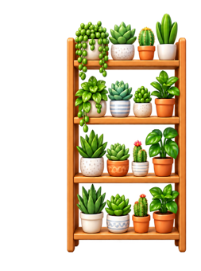
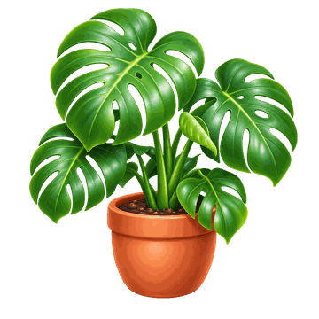
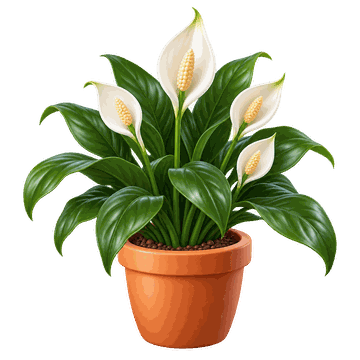
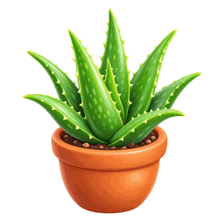

ברוכים הבאים לגן עדן ירוק
צמח בית מתאים יכול לשנות את האווירה בחדר. באתר תמצאו מידע על צמחי בית פופולריים, מה כל צמח צריך כדי לגדול, ואיך לבחור צמח שמתאים לתנאים אצלכם בבית.
לא בטוחים איזה צמח לבחור? ענו על שלוש שאלות קצרות על האור בחדר, הגודל הרצוי ותדירות ההשקיה, ונציע לכם את הצמח המתאים.
צמחים מומלצים



לכל הצמחים ולפרטים על הטיפול בהם: קטלוג הצמחים.
למה כדאי להכניס צמחים הביתה?
- צמחים מוסיפים צבע וחיות לכל חדר.
- הטיפול בצמח הוא הרגל יומיומי רגוע ומהנה.
- יש צמח כמעט לכל חדר, גם לחדר עם מעט אור.
- חלק מהצמחים דורשים מעט מאוד טיפול, ומתאימים גם למי שאין לו זמן.